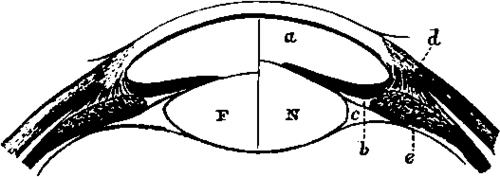
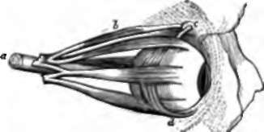

The Eye. Part 3
Description
This section is from the book "Animal Physiology: The Structure And Functions Of The Human Body", by John Cleland. Also available from Amazon: Animal Physiology, the Structure and Functions of the Human Body.
The Eye. Part 3
Another change which takes place in adjustment to short distances is lessening of the pupil; and it has been suggested that the contraction of the circular fibres of the iris presses on the sides of the lens so as to alter its form. But this supposition is disproved, not only by the fact that the faculty of adjustment has been found unimpaired when the iris has been wanting, but by the size of the pupil being diminished still more by increase of light than by looking at near objects. The iris seems to act simply as a diaphragm, cutting off the lateral rays; and this is specially required in a bright fight, to save the retina from undue stimulation, and in looking at near objects, because the rays from them are so exceedingly divergent.
178. When objects are looked at with both eyes, the muscles which move the eyeballs are brought into requisition. These are four recti and two obliqui muscles. The recti come forwards from the back of the orbit, to be inserted, in front of the middle of the eyeball, into the sclerotic; and they are named from their positions, superior, inferior, external, and internal. The superior oblique muscle passes forwards from the back of the orbit to the inner and upper angle of its fore part; there, becoming tendinous, it passes through a pulley of fibres attached to the frontal bone, and, changing its direction, turns outwards and backwards to be attached to the outer part of the eyeball, behind the middle. The inferior oblique muscle, springing from a point at the lower part of the inner margin of the front of the orbit, takes a similar direction to the tendon of the superior oblique, passing backwards and outwards below the eyeball, to be inserted on its outer side.
Fig. 123. Accommodation to Distances. F, Lens accommodated to far objects; N, to near objects; a, anterior chamber; b, posterior chamber; c, canal of Petit; d, ciliary muscle; e, ciliary process.
Fig. 124. Muscles of the Eyeball, o, Optio nerve; b, superior oblique muscle; c, pulley for the tendon of the same ; d, inferior oblique muscle. The other four muscles are the four recti.
The superior recti muscles of the two eyes always act in concert, as also do the inferior recti, but the external and internal recti act differently in different circumstances. In turning the head, while the eyes are fixed on a stationary object, or in following an object which crosses in front of us, the external rectus of one eye acts in concert with the internal rectus of the other; but, in turning the eyes from a distant to a near object, we make their axes converge on the object looked at, and the internal recti of both eyes act together. These limitations of the movements of muscles which must be considered voluntary are exceedingly curious, and find no parallel in the muscles of the limbs.
The use of the oblique muscles is not at first obvious; but it will be observed that when the eyes are converged, the superior and inferior recti, acting by themselves, will be no longer capable of rotating them directly upwards and downwards, seeing that the axis of vision and the direction of these muscles are no longer in the same vertical plane; and the oblique muscles are so disposed that, by acting in concert with the superior and inferior recti, they are capable of compensating for the deviation of the direction of these muscles from the axis of vision, and so maintain the vertical diameters of the eyeballs parallel to one another, which we shall immediately see to be a condition necessary for perfect vision.
179. When we look at an object with both eyes directed full upon it, we see it as a single object, notwithstanding that two images of it are received, one on each retina. But by artificial expedients these two images may be made to give the appearance of two objects; that is to say, double vision may be produced. By pressing a finger gently on the side of one eyeball, so as to derange the position of its axis of vision, a second picture of each object in the landscape may be made to appear, either above, below, or to one side of the more distinct picture presented to the other eye, according to the direction of pressure. Or, if a finger be held up exactly in front of a more distant object, and the eyes be directed to the finger, while the attention takes cognisance of the object beyond, that object will be seen double. On the other hand, in looking through a stereoscope, two pictures have the appearance of one. All these phenomena depend on one law, which may be expressed thus: that rays which fall on points in the outer half of one retina, are referred by the mind to the same direction as those which fall on similarly situated points in the inner half of the other retina. Such points are therefore said to be physiologically corresponding or identical. When one eye is moved from its position by pressure of a finger on it, the different points of the landscape are no longer thrown on identical points of the retinae, and they are therefore seen double. When the eyes converge on an object in front of another, the images of the hinder object are thrown on the inner halves of both retinæ, and therefore on points not identical. But, in looking through the stereoscope, although the pictures are two, each eye is directed full on the picture opposite it, and thus corresponding parts of the pictures are thrown on identical points, and referred to identical positions in space.
Double vision, it may here be mentioned, can be likewise artificially produced when only one eye is used. The principle, however, is different from that which we have been considering. If, in a card, a few pin holes be made so close together, that they shall be within a space not larger than the aperture of the pupil, and the pin holes be held to the eye, objects at some distance will be seen perfectly; but a minute object, such as a pin head, held near the card will appear multiplied as many times as there are pin holes. The explanation is, that the pin head is out of focus, and, looked at without a diaphragm, would be invisible; but the diaphragm cuts off a large part of each of the pencils of rays which spread out towards the pupil and would have been diffused over an area of the retina so as to interfere with one another; and the perforations admit only very small portions of them, which fall on different parts of that area, and are so narrow that the deficiency in focus is not sufficient to produce confusion.
180. Physiologists have sometimes exercised their ingenuity in trying to account for our seeing objects erect, notwithstanding that the pictures on the retina are inverted. But a little reflection will show that the inversion of the retinal image is no reason why the landscape should appear inverted. What we perceive is not the retinal image, but a number of sensations excited by it; and it must be considered as an ultimate fact, that the sensation produced by irritation of a rod or cone of the retina is not perceived as being in that structure, but as situated vertically opposite it, outside the body. If we are to explain why the landscape is not seen inverted, we must explain why it is not seen inside our heads. A child does not rectify an inverted landscape by experience derived from touch, any more than it imagines the external world, as manifested by vision, to be concentrated in two small spots at the bottom of its eyeballs.
Continue to:
- prev: The Eye. Part 2
- Table of Contents
- next: 181. Distance